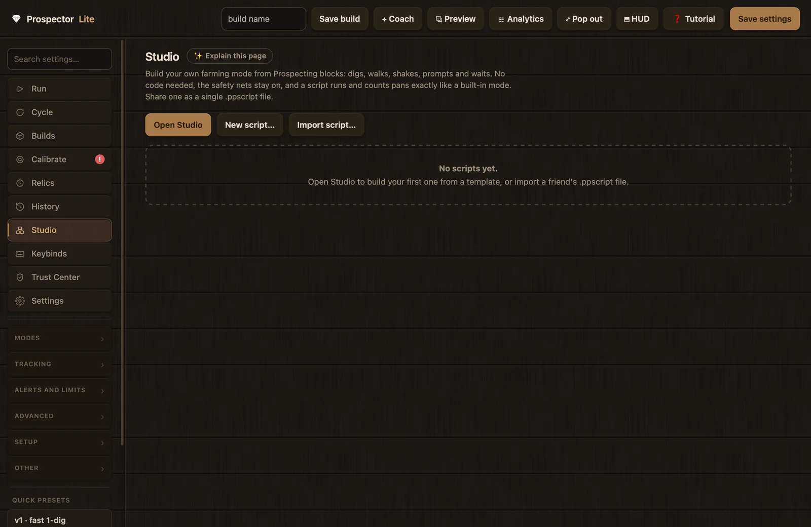
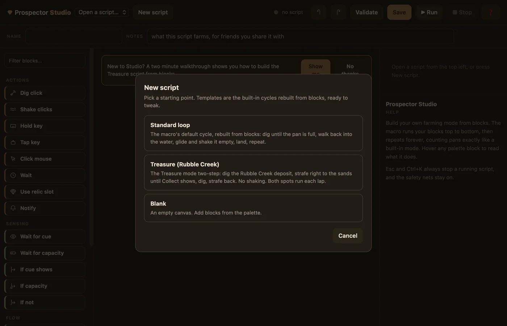
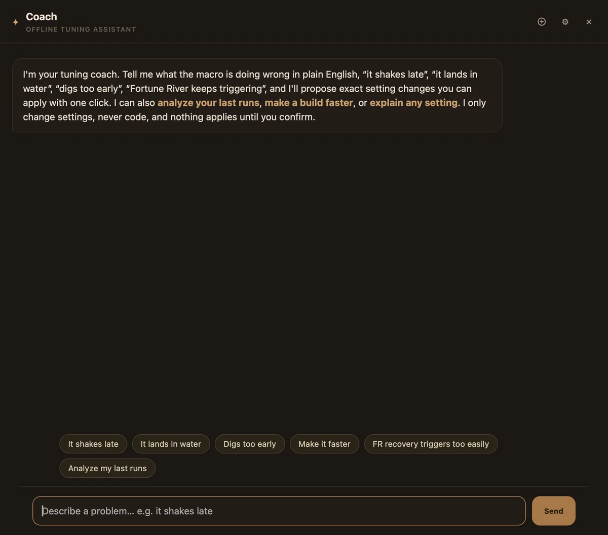

Guides
The interface, screen by screen
Prospector Lite is one main window with ten pinned tabs, five collapsible groups of settings pages, and six auxiliary windows for monitoring and authoring. This page tours each screen in order: what is on it, what each control does, and which wiki page covers it in depth. Use it as a map; the linked pages carry the procedures and the setting-by-setting detail.
Overall layout
The main window has three zones. The sidebar on the left holds navigation, the search box and the quick preset chips. The center shows the active page. The right side is shared by two panels: the Preview panel (hover help) and the Coach panel; opening the Coach hides Preview, and closing the Coach brings Preview back.
Sidebar: pinned tabs and groups
Ten tabs are pinned at the top of the sidebar, in this order: Run, Cycle, Builds, Calibrate, Relics, History, Studio, Keybinds, Trust Center, Settings. Below them sit five collapsible groups holding the settings pages:
| Group | Pages inside |
|---|---|
| Modes | Treasure chest, Shards, Geodes |
| Tracking | Earnings, Tracker |
| Alerts and limits | Notifications, Auto-stop |
| Advanced | Advanced tuning |
| Setup | Window, "Relic behaviour" |
Any settings section without an assigned group falls into an automatic Other group, so nothing can disappear from navigation. All of these pages are documented key by key in the Settings reference. Each sidebar tab also carries a small warning badge slot; see warning badges below.
The "Search settings…" box above the nav filters the sidebar as you type, matching both page names and individual setting labels, so you can jump to a setting without knowing which page owns it.
Quick preset chips
Under the heading Quick presets sit four chips. A preset changes the on-screen values only; the change persists when you press Save settings or Start macro (Start saves first), and Ctrl+Z undoes a preset load.
| Chip | What it loads |
|---|---|
| "v1 · fast 1-dig" | Fast single-dig tuning: 15 ms dig click, one dig fills the pan. |
| "v2 · multi-dig" | Multi-dig tuning: 75 ms dig click, up to 8 digs per fill, with waits between digs. |
| "v3 · geode" | 33 keys that turn on Geode mode with the long animation waits slow geode gear needs. |
| "Reset defaults" | All 146 settings back to shipped defaults. Builds and calibration are untouched. |
Preview panel
The "⧉ Preview" panel is the hover-help surface: hover a sidebar tab to preview that page, or hover any setting, button or stat for a full explanation, often with a chart. The "how it runs" chip next to the Start controls opens the complete order of events for a cycle in this panel.
Compact mode
The app Settings page has a "Compact mode (mini sidebar, opens on hover)" toggle. It shrinks the native window to 740 × 820, collapses the sidebar to a hover-out rail, and hides the Preview panel, which is useful on a single monitor next to the game. See the Settings page below.
The top bar
From left to right the top bar holds the brand, a mode strip (Studio launches only, see below), a hamburger button that collapses the rest into a menu on narrow windows, and then these controls in order:
| Control | What it does |
|---|---|
| build name field | Names the build you are about to save with the button next to it. |
| "Save build" | Snapshots all settings plus the relic rows into a named build. Requires a name; manage the result on the Builds tab. |
| "✦ Coach" | Opens or closes the Coach side panel: describe a problem, get proposed setting changes. See the Coach. |
| "⧉ Preview" | Shows or hides the hover-help Preview panel. |
| "☷ Analytics" | Opens the Analytics window: throughput, earnings, finds and reliability cards. Covered on Analytics and HUD. |
| "⤢ Pop out" | Swaps the main window for the floating pill (below). Ctrl+P toggles it from anywhere. |
| "⬒ HUD" | Toggles the draggable HUD overlay beside the game. Covered on Analytics and HUD. |
| "❓ Tutorial" | Opens the Tutorials menu: the full tour plus a walkthrough for each page. See the tutorial system. |
| "Save settings" | Makes the current settings stick across restarts. Edits already apply live while the app is open; calibration and builds save separately, on their own buttons. |

Mode strip (Studio launches only)
When Prospector Lite is launched by the Prospector Studio desktop app, a three-button strip appears at the left of the top bar: "Classic" (the built-in cycle), "Studio Build" (run a build authored in Prospector Studio) and "Studio Script" (run a general-automation script through the same engine). Each mode shows only its own tab set. Switching while a run is active asks "Stop the run and switch?" and stops the run first, releasing all input safely. In a standalone launch the strip is not shown.
Run tab

The page hint sums it up: "Start the macro, tab into Roblox. Ctrl+K also starts/stops; Esc quits."
Controls
"Start macro" saves your current settings and relic rows, then launches the engine; the toast "Launched, Ctrl+K to start" confirms it. "Pause" pauses mid-cycle and relabels to "Resume"; a pause keeps the session, its stats, relic timers and earnings. "Stop" ends the session for good and writes it to History with full stats and an event timeline. The state text beside them reads "stopped", "running" or "paused".
A red calibration banner appears above the controls when a run needs attention before starting: "Re-calibration needed." with the reason, or "Capacity calibration needs review." Clicking it opens the Warnings drawer at the matching event.
Mode select
The Mode selector chooses what Start runs: "Built-in modes" (the classic cycle, shaped by your Treasure, Shards and Geodes settings) or any saved Studio script, listed as "Script: name". While a script is active it supersedes the mode toggles, and a note beside the selector says so. A status card above the stats shows the active script or build name, its state badge, the current step and a free-text HUD line while it runs.
The 13-stat grid
| Stat | What it counts |
|---|---|
| runtime | Session clock from Start, pauses included; the divisor behind the per-hour figures. |
| pans | Completed loops: dig, walk back, shake, land. The baseline number. |
| digs | Total digs, probe digs included. Far more digs than pans means it is probing or re-digging too much. |
| pans/hr | Pace at the current rate; give it a few minutes before trusting it. |
| clean % | Share of pans that ran with no nudges, retries or recoveries. |
| recoveries | Times the recovery ladder stepped in after the macro got stuck. |
| nudges | Small corrective movements while hunting for land after a shake. |
| shake misses | Shakes that did not empty the pan. |
| relics | Relics placed automatically this session by your timers. |
| $/hr | Money per hour, read off the game HUD; needs earnings tracking and the Money region calibrated. macOS only. Blank until the first gain. |
| shards/hr | Same as money per hour, for shards. Blank until the first gain. |
| safe-stops | Times the macro paused itself and retried instead of quitting. |
| hard-stops | Retries ran out, or something unrecoverable hit. History names the reason. |
After five pans these stats feed a tuning-health check: too many nudges, shake misses or recoveries per pan turns the matching Cycle stage badge yellow and raises a banner on the Cycle page naming the stages to look at. The counters are the input; the Cycle page is where you act on them.
Relic countdowns and the set-timer row
When relic timers are enabled, a chip row shows each relic name with a live countdown. A "set timer" row lets you adjust one mid-run: pick the relic, type a time (accepted forms: "3m 4s", "3:04", or plain seconds like "184"), then press "Set" or "Reset to full". In game, Ctrl+Shift+1 to 9 resets a single relic timer and Ctrl+U resets them all, for when you place something by hand. Rows are configured on the Relics tab.
Run log
The log pane streams engine events, batched about every 250 ms so long runs stay smooth. The on-screen buffer is capped near 80,000 characters, but a complete copy of each run's log is written to disk and reachable from History. During geode waits a countdown chip with a progress bar (labeled "geode fill") appears above the stats.
Cycle tab

Cycle is the engine-tuning home. At the top, a clickable loop diagram (land, water, land) shows the cycle with live numbers, and below it the Cycle timeline renders each phase as a bar: hover a bar for the settings behind it, click to jump to them. Wide bars are where your seconds go, so the timeline doubles as a profiler.
The tuning itself lives in six stage cards: "Dig", "Walk back", "Glide & start", "Shake & drain", "Land & prove" and "Safety nets", plus an automatic "Other tuning" card that catches any key not assigned to a stage, so no setting is ever dropped. Numeric settings render as a slider paired with a number box; the slider bounds are the same known-safe ranges the Coach uses (94 of them), so dragging a slider cannot leave the tested envelope, while the number box accepts finer values.
When the Run tab's health check flags a stage, the banner "Tuning may be off." appears here with the observed numbers, and the flagged stage cards are marked yellow. Setting-by-setting documentation for this page lives in the Settings reference, Cycle section.
Builds tab

The page hint states the model: "Every build is a FULL settings profile (all tabs + relics). Load applies everything; Overwrite captures your current settings into that build; click a description to edit it."
The toolbar has a "Search builds…" box, a sort selector (newest, oldest, most used, recently used, or alphabetical), a name field with "Save current", and "Import build…". Each card offers Load, Overwrite, export and delete. The top bar's build name field and "Save build" button save to the same library, so you can snapshot without leaving the page you are tuning. Strategy for what to put in a build, and the shipped example builds, are covered in Modes and builds.
Calibrate tab

This tab holds everything the detector needs to see the game. The full procedure, with in-game example screenshots for each target, is on the Calibration page; here is what is on the screen.
- Guided tools and tests: "✨ Guided calibration (recommended)" walks the core targets in a wizard; "Test detection (live)", "Test money/shards read" and "Test find pop-up read" verify what the detector and OCR are getting right now, each printing its result inline.
- Six pixel rows: the two capacity-bar ends, the Pan, Collect Deposit and Shake prompts, and the dig-trigger green pixel. Each row shows x and y inputs, a hex color with a swatch, and a "Calibrate" button that opens the full-screen picker. A "Test capacity calibration" row sits after the capacity-bar rows.
- Three region rows: "Money counter region", "Shards counter region" and "Find pop-up region", each with a "Draw box" button for dragging a rectangle on screen.
- "Fortune River recovery (optional, advanced)": eight extra rows covering the Fortune River and Starfall River row colors, the Auto Pan button in its ON and OFF states, the fast-travel list edges, the Open Fast Travel button, and a cursor home point.
- Actions: "Save calibration", "Export…" and "Import…". Calibration saves separately from settings and builds.
- Advanced cue matching: the required letter-shape detector. Its toggle is labeled "Use advanced cue matching (required; switching it off keeps readiness blocked)"; a second, testing-only toggle matches masks without the pixel fallback; "White sensitivity (lower = more permissive)" defaults to 160 (range 80 to 240). "✨ Guided cue capture" records the three prompt masks (Pan, Collect Deposit, Shake), shown afterward as captured-mask cards with per-cue Clear buttons.
Any "Calibrate" or "Draw box" button opens a full-screen overlay picker: a crosshair over a screenshot with a magnifying loupe, Confirm, Redo and Cancel, a drag-a-box mode for regions, and a mask-edit mode for cues where you click letter cells to toggle them (Enter confirms, Esc cancels).
Relics tab

Relic timers automate item use on a schedule: every N minutes the macro pauses, switches to the item's hotbar slot, double-clicks to use it, switches back to slot 1 (the pan), and resumes. The "Enable relic timer" master toggle arms the system; below it sit four rows, each with:
- an enable switch for that row;
- a "Relic name" field (the name shows on the Run tab countdown and the pill);
- "every": the interval in minutes, minimum 1;
- "slot": the hotbar slot, 0 to 9;
- clicks: how many clicks place it, minimum 1.
"Save relics" stores the rows; Start also saves them. Timer behavior during pauses (relative timers) and the related engine settings live under the "Relic behaviour" page in the Settings reference.
History tab

"Past runs and their stats, kept across restarts." Sessions save automatically when they end; "Refresh" pulls in one that just finished. Each run card shows, newest first:
- the ended timestamp, a runtime, and badges: "Tracker" for watch-only runs of the game's own Auto Pan, the script name when a Studio script ran, and a stop-reason badge;
- eight stat cells: pans, pans/hr, digs, clean, recoveries, nudges, relics, finds;
- an earnings line when money or shards were tracked, with per-hour and per-pan figures;
- a phase-timing line: mean and p95 duration per cycle phase;
- a "why" line grouping event reasons (safe-stops, hard-stops, nudges, recoveries and so on);
- a collapsible "Detailed timeline" with the last 150 events, each timestamped and labeled;
- "View full log" when a saved log exists, opening the complete run log in a modal.
The file keeps the last 100 runs; full logs are stored per run (up to 40,000 lines each, newest 120 files kept). Both live as plain files in the local data folder, listed in the Trust Center.
Studio tab and the Studio editor
The Studio tab (script library)

Studio lets you build a farming mode from Prospecting blocks, no code needed; a script runs through the same engine and counts pans like a built-in mode, and the safety nets stay on. The tab is the library: "Open Studio" opens the editor window, "New script…" opens it straight into the template picker, and "Import script…" loads a shared .ppscript file.
Each script card shows its name, an "active" chip when it is the mode Start runs, a "N to fix" chip when validation found problems, the description, a block count and last-edited date. Card buttons: "Open", "Set active" (or "Deactivate"), "Run" (set active and start the macro in one step), "Duplicate", "Export" (save as a .ppscript file to share) and delete, which asks "sure?" before acting. Only clean, runnable scripts can be set active.
When a script authored in Prospector Studio declares adjustable parameters, a "Build settings from the graph" panel appears with one row per parameter. Its badge says "applies at the next start", and the tooltip explains why: "The engine reads its configuration when a run starts; a live run keeps what it started with." A value that would break the script is rejected rather than applied.
The Studio editor window

The editor is a three-pane window. Its top bar holds a script picker, "New script", a validation dot with status text ("ready to run", "N error(s)", or "N to fix before it can run"), a worst-case lap estimate (tooltip: "Worst case for one full lap, if every wait runs to its limit"), Undo and Redo (a 100-snapshot stack), "Validate", "Save", "▶ Run" (save, set active and start the macro), "■ Stop", and a walkthrough button. Below it, a metabar takes the script's Name and Notes. Saving keeps drafts even when problems remain; only schema errors block a save.
- Palette (left): the block library in three groups: Actions, Sensing, Flow. Click a block to add it after the selected one, or drag it where it should go; drop onto an If, Repeat or Group to nest it inside. Press / anywhere to quick-add by name.
- Canvas (center): the script itself, which repeats forever while the macro runs. Each block card shows a live prose summary of its parameters; the currently executing block gets a green border during a run. Right-click for duplicate, copy, paste, move, nest and delete; arrow keys move the selection and Alt plus arrows move or nest blocks.
- Inspector (right): parameters for the selected block. Integers render as a slider with a synced number box, clamped to the schema range; below them a help box explains the hovered or selected block with raise-it, lower-it and pairs-with guidance.
- Problems bar (bottom): each validation error and warning as a row; clicking one selects and scrolls to the offending block.
New scripts start from a template: "Standard loop" (the default cycle rebuilt from blocks), "Treasure (Rubble Creek)" (the two-spot Treasure pattern, no shaking), or "Blank". Scripts are limited to 500 blocks and 16 nesting levels, waits are capped at 120,000 ms, and a script that completes 50 laps without sending input or waiting stops itself safely. Esc and Ctrl+K always stop a running script.
The 17 block types
The palette generates from the same schema the validator and the engine enforce, so the editor can never drift from what actually runs. Keys are limited to a whitelist (W, A, S, D, 1 to 9, Shift, Space) that the engine enforces again at runtime, so a script can never press anything else.
Actions
8 blocks| Block | What it does | Key parameters (defaults) |
|---|---|---|
| Dig click | One dig: press and hold the mouse, then release; the same click the macro's own dig uses. | Dig hold 75 ms (5 to 600) |
| Shake clicks | Empties the pan with rapid clicks, either an exact count or until the calibrated capacity read says empty. | Exact clicks 0 (0 = until empty), click 18 ms, gap 14 ms, give up after 4000 ms, "Hold W while shaking" on |
| Hold key | Holds one movement key for a fixed time; the key is always released, even if you stop mid-hold. | Key S, hold 300 ms (20 to 10000) |
| Tap key | Presses and releases one whitelisted key: a hotbar number, a movement key, Shift or Space. | Key 1, hold 40 ms |
| Click mouse | One left click, held for the set time, optionally moving the cursor first. | Click length 40 ms; cursor: in place, screen center, or the calibrated Auto Pan button |
| Wait | Does nothing for the set time; the workhorse for slow animations. Esc, Ctrl+K and Pause interrupt it instantly. | 500 ms (10 to 120000) |
| Use relic slot | Places a relic at a fixed point in the loop, identical to the timed relic path. | Slot 2, clicks 2 |
| Notify | Sends a Discord message through your existing notification setup. | Message text, 200 characters max |
Sensing
5 blocks| Block | What it does | Key parameters (defaults) |
|---|---|---|
| Wait for cue | Watches a HUD prompt through the calibrated detector and moves on the moment it shows; hold a key while waiting to make it a walk-until move. | Cue Pan, hold none, "leave the current prompt first" off, timeout 3000 ms; on timeout: keep going or safe stop |
| Wait for capacity | Watches the calibrated capacity bar until the pan reads full or empty, using the same thresholds as the macro's own cycle. | State Full, timeout 5000 ms; on timeout: keep going or safe stop |
| If cue shows (container) | Checks a HUD prompt once, right now; runs the steps inside if it is showing. | Cue Collect Deposit |
| If capacity (container) | Checks the capacity bar once, right now. | State Full |
| If not (container) | The inverse check: runs its steps when the chosen condition is not true. | Choices: a prompt showing, pan full, pan empty |
Flow
4 blocks| Block | What it does | Key parameters (defaults) |
|---|---|---|
| Repeat N times | Runs the steps inside N times. The whole script already repeats forever, so you never need a Repeat around everything. | Times 2 (1 to 1000) |
| Group (container) | A named container that just runs its steps in order; purely for readability. | Label, "Steps" by default |
| Safe stop | Ends the run through the macro's normal safe-stop path: inputs released, stats saved, reason shown in the log and History. | Reason text |
| Comment | A note in the script that does nothing when it runs. | Text, 200 characters max |
Keybinds tab

The page hint: "Click a box, then press the key combo you want. They work globally while the macro is running. Stop & Start the macro to apply." Clicking a box arms it ("press keys…"); the next non-modifier keypress is recorded, shown as Ctrl, Alt, Shift plus the key.
| Action (row label) | Default | Notes |
|---|---|---|
| "Start / Stop" | Ctrl+K | Flips the run; toggling out of a pause resumes; stopping releases all held input. |
| "Pause / Resume (keeps session)" | Ctrl+L | Session pause keeping stats, relic timers and earnings. |
| "Reset relic timers to full" | Ctrl+U | Resets all relic timers at once. |
| "Soft-stop (test)" | Ctrl+J | Triggers the safe-stop path (pause and retry) as a test. |
| "Quit macro" | Esc | Stops the engine and releases all keys and mouse buttons. |
| "Toggle pop-out pill" | Ctrl+P | Swaps between the pill and the main window. |
"Save keybinds" writes the combos; the toast reminds you: "Keybinds saved, Stop & Start the macro to apply", because the engine reads its hotkeys when a run starts. One extra shortcut is fixed and not rebindable: Ctrl+Shift+1 to 9 resets a single relic timer. A "Reset Shared" on the app Settings page restores all six defaults.
Trust Center tab

The Trust Center is the app's self-audit page. It renders one card per capability from a registry (11 on macOS, 10 on Windows), each with a live OS status pill, a requirement badge, facts on what data it can access, what is kept on disk and what leaves this computer, and a real Test button; the screen test shows its capture once and does not save it, the input test types one harmless letter into the app's own box, and the Safe Stop test arms an 8-second window and reports whether it heard Esc or Ctrl+K.
Below the cards: "Build identity" (version, commit, platform, signing state), "Source code" (repository links pinned to the build's commit), "Network behaviour" (normal startup and macro use make zero network requests; the only outbound paths are the two optional, off-by-default features: your own Discord webhook and your own Coach AI key), "Roblox safety boundary" (no injection, no process-memory access, no game-file modification; pixels and ordinary key presses only), "Local data" (a table of the data-folder files with open, export and delete actions), setup wizard re-run controls, help buttons, and security reporting links. The same registry powers the setup wizard's permissions step, so the two screens can never disagree. The full walkthrough, including per-platform grant steps, is on Trust and permissions.
Settings page (app)

This page covers app appearance and behavior, saved on this computer; it does not change your macro tuning or your builds. The five toggles:
| Toggle (label) | Default | Effect |
|---|---|---|
| "Compact mode (mini sidebar, opens on hover)" | off | Resizes the window to 740 × 820 with a hover-out sidebar; hides Preview. |
| "Wood texture background" | on | Off switches to a plain background. |
| "Reduce animations" | off | Disables nonessential motion, including the splash fade. |
| "Skip the setup wizard automatically on launch" | off | Launches go straight to the app. The same preference is writable from the welcome screen and the Trust Center. |
| "Open tutorial whenever Prospector Lite opens" | on | The main tutorial auto-opens on entry; the tour's own footer checkbox controls the same preference. |
Below the toggles, a note reminds you that Ctrl+Z undoes a setting change and Ctrl+Y redoes it, covering slider, box and preset changes, next to an inline "FAQ & troubleshooting" button.
Settings ownership and resets
The "Settings ownership" card explains that each setting has one owner so the two macro modes never trample each other: Classic owns the built-in cycle tuning (modes, dig, shake and walk timing, recovery, relics); Studio owns which build is active and the editor flags, stored with the script library; Shared is used by every run (calibration, game window, notifications, auto-stop, earnings tracking, keybinds, appearance). Three buttons reset one owner at a time:
- "Reset Classic…": built-in cycle tuning back to shipped defaults; saved builds, Studio scripts, calibration and history are untouched.
- "Reset Studio…": clears which build is active and the mode switch; scripts themselves are not deleted.
- "Reset Shared…": notifications, auto-stop, window tracking, earnings tracking, keybinds and appearance back to defaults. Calibration is cleared only when the checkbox "Reset Shared also clears calibration (you would have to calibrate again)" is ticked.
Each reset confirms first, reports how many keys changed, and reloads the page.
The Coach

The Coach is a tuning assistant with two surfaces sharing one backend and one transcript: the side panel opened by "✦ Coach", and a separate window opened from the panel's expand button. Describe a problem in plain words (the input hints: "Describe a problem… e.g. it shakes late") and it answers with proposed changes rendered as cards: each row names the setting, shows the old and new value with a reason, and "Implement" applies them in one click. Applied changes show "✓ Applied, press Save settings to keep". Only validated settings keys from a whitelist can be applied, never code. A stats form (capacity, dig strength, dig speed, shake strength, shake speed, luck, walk speed) lets it tailor advice to your gear.
Engines and keys
The engine selector in the Coach's settings offers: "Offline brain, free, instant" (the default; a local rules engine, no network), "Claude (Anthropic)", "OpenAI (GPT)", "Google Gemini", "DeepSeek" and "Custom / local". Cloud engines are bring-your-own-key: each provider shows a short model menu plus an "Other model id…" escape hatch, and the key field says it plainly: "paste key, stays on this PC". The footer note sums up the cost model: offline is free and needs nothing; cloud engines use your own key and cost a fraction of a cent per message.
The key is stored in a separate restricted local secrets file, never in the main config, and is never echoed back to the UI once saved. Base URLs must be https; plain http is allowed only for localhost (the local Ollama case). If an API call fails for any reason, the Coach falls back to the offline brain rather than failing the chat. The transcript persists locally, capped at the last 120 messages.
Warning badges and the Warnings drawer

The diagnostics layer watches runs and calibration and surfaces problems as badges on the sidebar tabs: red for errors, yellow for warnings, with a count. Clicking a badge opens the Warnings drawer at that tab's top event without switching tabs; the Run tab's calibration banner and the Cycle page's tuning banner open the same drawer.
Each event's detail view is structured: "What happened", "What Prospector Lite observed" with evidence bullets, "Most likely cause" (labeled "High confidence", "Medium confidence" or "Possible cause"), "Recommended first action", and then the actionable lists: "Exact settings to review" shows each setting's current and suggested value with a reason and buttons "Open setting", "Apply suggested value" and, after applying, "Undo"; calibration and permission items get their own "Open" deep links. The view closes with expected effect, tradeoff, how to verify, and a related FAQ link.
Footer actions: "Copy diagnostic details" (the raw event data), "Dismiss", and "Don't show again for this code", which is hidden for critical events. After an "Open setting" deep link, a floating recommendation chip appears next to the target row with the suggested value, the reason, and its own Apply button. When nothing is active the drawer says so: "No active warnings. Everything the diagnostics layer watches looks fine right now."
The tutorial system

Three layers of built-in help share one registry, and the content is local only: Prospector Lite never fetches remote tutorial text.
The full tour and page walkthroughs
The "❓ Tutorial" button opens the Tutorials menu: "The full tour" plus focused walkthroughs for Calibration, Cycle tuning, Recovery and safety nets, the Modes pages, Tracking, Builds, Relics, Notifications and auto-stop, and Studio. Tours you have finished get a "seen" chip; all are replayable. A second group of entries opens the FAQ, the welcome and privacy screen, the Trust Center, and a full re-run of the setup wizard.
A tour runs as a spotlight overlay with a step-by-step popover: "Skip tour", "Back" and "Next" buttons (the last step reads "Finish"), progress dots, and arrow-key navigation; steps can switch tabs and highlight the control they describe. The first time you visit a tab that has its own walkthrough, the app offers it once; each such page header also has a "✨ Explain this page" button. The main tour auto-opens on launch while "Open tutorial whenever Prospector Lite opens" is on (the default); the tour's footer checkbox "Do not open automatically in future" flips the same preference.
The FAQ modal
The "FAQ and troubleshooting" modal is searchable by symptom as well as by question (the search field hints: "Search questions and symptoms…"). Each entry is structured as Symptoms, Likely causes, First thing to try, Steps, How to verify, and Applies to, and ends with deep-link buttons ("Open setting", "Open calibration", "Open permission") that close the modal and take you to the exact surface. It opens from the Settings page, the Calibrate tab, the Trust Center, the wizard's readiness page, the Tutorials menu, and from related-FAQ links inside the Warnings drawer. The wiki's own Troubleshooting and FAQ page covers the same ground for reading outside the app.